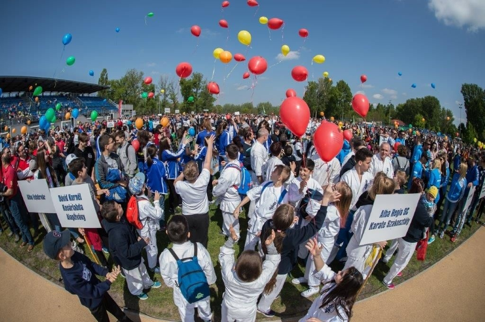
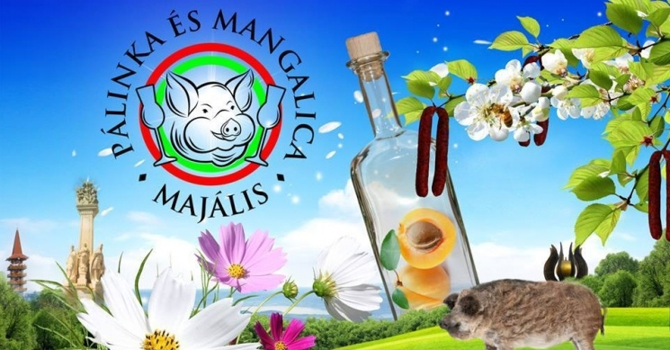
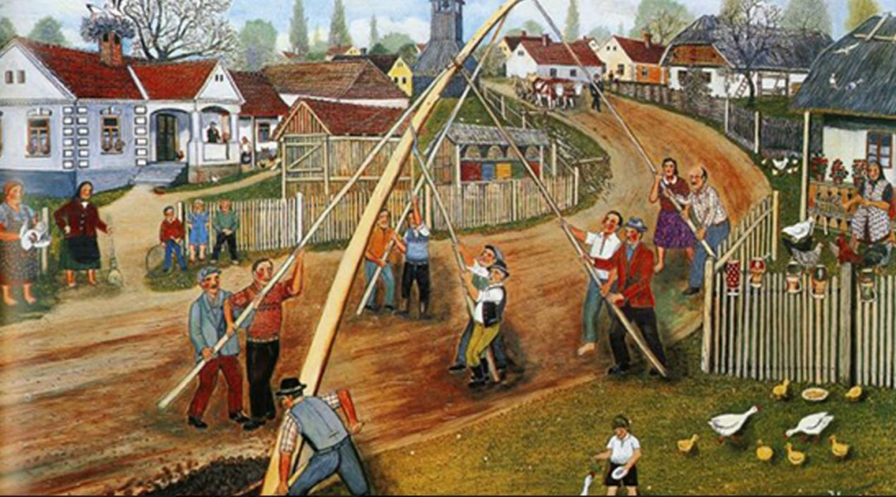
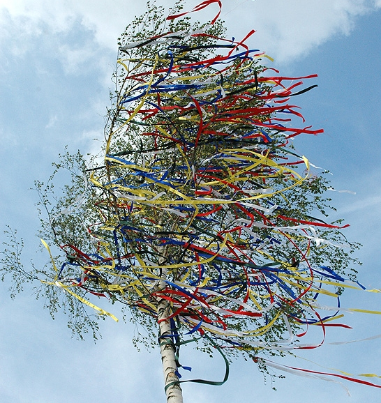
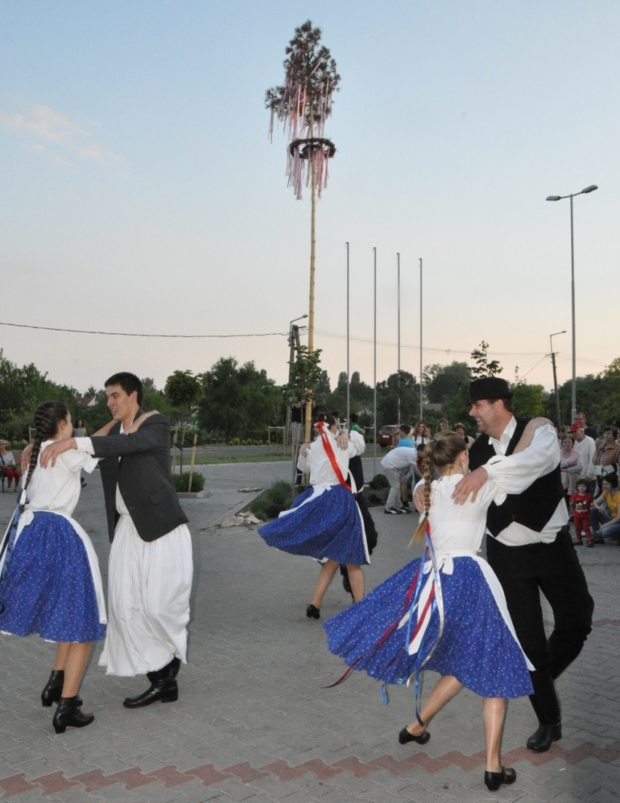

Ünnepböl üzlet
Miért sör-virslivel ünnepel a magyar?
A magyar nyelvterületen a májusfa állítása kapcsolódott először május l-jéhez, a munka ünnepe vonal csak jóval később vette át a hatalmat.
A májusfa, a zöld ág a természet megújulásának szimbóluma, és legtöbbször az udvarlási szándék bizonyítéka, szerelmi ajándék is volt.
Keresztény eredete az, hogy Szent Jakab és Fülöp útitársa egy Valburga nevű szűz hajadon volt, akit a pogányok rágalmaztak azért, hogy téríteni jár a férfiakkal.
A lány leszúrta a vándorbotját, térdelve imádkozott előtte, és egy-két óra múlva a bot kizöldült, a pogányok pedig visszakoztak. Ez a nap volt Szent Jakab apostol napja (május 1.).
A népi hiedelem szerint május 1. megmutatja, hogy milyen lesz a jövő tél, ha esik az eső, a termés jó lesz, és az ezen a napon köpült vajat fülfájás ellen használták.
Az eredetileg a munkások ünnepe időközben átalakult a munka ünnepévé, ami nyilván jobban hangzott az akkori rezsimben.
A szabadnap szerencsére megmaradt, lassan már senki nem tudja, hogy miért ünnepeljük munka nélkül a munka ünnepét, majális van, öröm van, virsli és sör van.
De miért éppen ez a hagyományos ellátás a vurstlikban?
Hegyesné dr. Vecseri Beáta, a Corvinus Egyetem Sör- és Szeszipari Tanszékének docense szerint azért alakulhatott ki éppen ez a páros Magyarországon, mert amíg a bor a parasztsághoz, a földművelő réteghez tartozott, a sört - és a virslit is - az ipari proletariátus állította elő. A munkásosztálynak pedig az általa előállított terméket ajánlotta a párt fogyasztásra, ezzel is támogatva az ipart a mezőgazdasággal szemben.
A docens szerint a leválasztott és/vagy társbérlőkkel megosztott lakások konyhája ráadásul általában annyira kicsi volt, hogy alkalmatlanná vált a főzésre. Ennek oka szintén az lehetett, hogy az ipar által előállított termékekre igyekezték rábeszélni az embereket, tette hozzá.
Kocsis János városszociológus szerint a kis konyhák alapideológiája az volt, hogy a párt kívánsága szerint a munkáscsaládok hétköznapja és hétvégéje nem otthon telik.
A gyors reggeli után a munkahelyen, iskolában vagy óvodában ebédel a nép, majd este egy, az állam által támogatott olcsó étteremben eszi meg a vacsorát.
A hétvégéket lehetőség szerint az állam által tervezett programokon tölti, az állam által támogatott élelmiszereket fogyasztva.
A gyakorlat a két világháború között született, az ötvenes években pedig úgy gondolták, hogy érdemes megtartani.
A cél az ellenőrzött szórakozás volt. (Más kérdés, hogy a magyar mindent megold, a hat négyzetméteres konyhában is képes disznót vágni.)
Programok

Ha május elseje, akkor mozgás, akár a karanténban is! Idén sem marad el Székesfehérváron a hagyományos Sportmajális, csak az online térbe költözik.
Május elsején online edzésbemutatók és sportfoglalkozások részese lehet minden mozogni vágyó a város honlapján. Az egyes foglalkozások között szakemberek, edzők és sportolók adnak hasznos tanácsokat.
Tartsanak velünk, mozogjunk együtt május elsején!
A napindító bemelegítés és a laza átmozgatás után erőnléti, állóképességet és mozgáskoordinációt fejlesztő, valamint
funkcionális edzésekbe lehet bekapcsolódni.
Az otthon is jól űzhető sportok között lesz jóga- és pilates-foglalkozás, izom- és alakformáló edzés, saját testsúlyos edzés, női torna és balett alapú erősítő torna is.
Az edzések között szakemberek, edzők és sportolók adnak hasznos tanácsokat az otthoni mozgáshoz, és azt is elárulják, ők miként edzenek most.

Zala megye egyik legnépszerűbb gasztronómiai rendezvénye, mely Zalaegerszeg belvárosában, a Sportcsarnok és Pláza előtti téren kerül megrendezésre. Gasztronómiai, kulturális, zenei programok; folk bazár, vidámpark, játszóházak, bűvész show, japán dobszínház, házipálinka verseny.
Májusfa
A májusfa a természet újjászületésének szimbóluma, az ifjúság tavaszi szokásainak Európa-szerte ismert szimbolikus kelléke.
Története
A májusfát vagy májfát csoportba szerveződve állították a legények a lányoknak, akiknek ez nagy megtiszteltetés volt.
Magas, sudár fák voltak erre alkalmasak, melyeket a kerítésoszlophoz rögzítettek éjjel vagy kora hajnalban. Általában színes szalagokkal, étellel-itallal is díszítették.
Legtöbbször az udvarló legény vezetésével állították a fát, de egyes területeken a legények a rokonlányoknak is állítottak. Gyakran a közösségeknek is volt egy közös fája, aminek a kidöntését ünnepély, és táncmulatság kísérte.
A lányok viselkedése szinte falvanként változott. Volt, aki kiment és megkínálta a legényt borral.
Tápiószentmártonban a májfára kerülő szalagokat a lány kölcsönözte a legénynek.
Általában az udvarló legény állította fel, de egyes községekben a legények a rokon lányoknak is állítottak májusfát.
Májusfaállitás

A májusfa felállításának legjellemzőbb, hagyomány szerinti időpontja az április 30-áról május 1-jére virradó éjszaka volt. A májusfát vagy májusi gallyat világosig őrizni kellett. A két háború között divatba jött a szerenád, az éjjelizene május elsején. Nagykőrösön amelyik lánynak már volt udvarlója, az május 1-jén kapott májusfát. Leggyakrabban nyárfa volt, de állítottak vadkörtét, orgonát, vadpiszkét is. A fákra színes papírszalagokat akasztottak. Ezután szerenádot adtak, amit a lánynak fogadni illett egy szál gyufa meggyújtásával. A szerenádot követően a lány kiment és borral kínálta a legényeket.
Ez a szokás egyes falvakban még napjainkban is élő hagyományként van jelen. A hajadon lányok kapuját bekötözik, hogy ne tudjon megszökni, és a kerítés elé díszes (általában krepp) szalagokkal feldíszített fát állítanak, amire kisebb nagyobb ajándékokat (italok, ajándékcsomagok, parfüm, virág, ékszerek, lufikat stb.) is kötözhetnek az udvarlók. Egy kerítés előtt az illendőség szerint egy fának szokás állnia, de előfordul, hogy versengés alakul ki a faállítók között, ilyenkor kettő vagy több fa is kerülhet a kerítés elé.
Egyes vidékeken a májusfaállítás alternatívája az udvarlók részéről a májuskosár köttetése. Ez egy nagyobbacska kosár, teli ajándékkal és színes virágokkal, szalaggal átkötve.
Májusfa kitáncolása


Májusfák kidöntése járt együtt általában nagyobb ünnepélyességgel, táncmulatsággal. A májusfa ledöntésének szertartásos mozzanata volt a fa körültáncolása, a májusfára mászás. Különösen nehéz volt a lehúzott kérgű, magas fát megmászni. Azé lett a tetejére erősített ital, akinek ez sikerült. A legények gyakran megtréfálták egymást azzal, hogy az üvegbe paprikás vizet tettek.
Némely településeken hagyományőrző rendezvényként éledt újjá a rendszerváltást követő időszakban a májusfaállítás szokása, egy közös, községi fa felállításával – az adott község főterén vagy valamelyik frekventált közterületén –, majd május végén a kidöntésével.
Ilyenkor általában az állításhoz és a kidöntéshez egyaránt kapcsolódhat valamilyen települési ünnepi rendezvény, táncos mulatság.